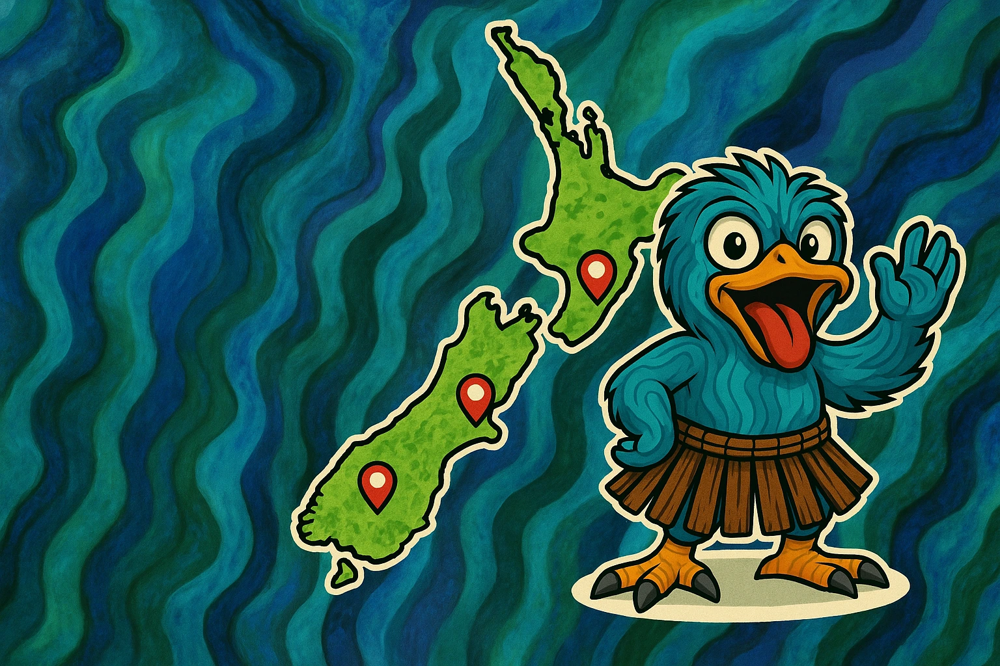
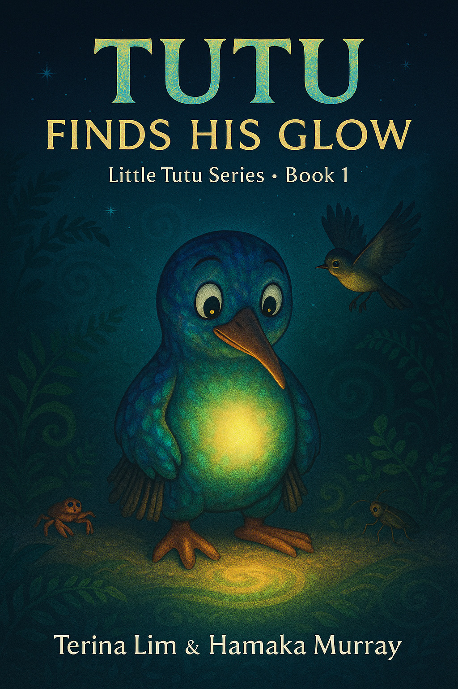
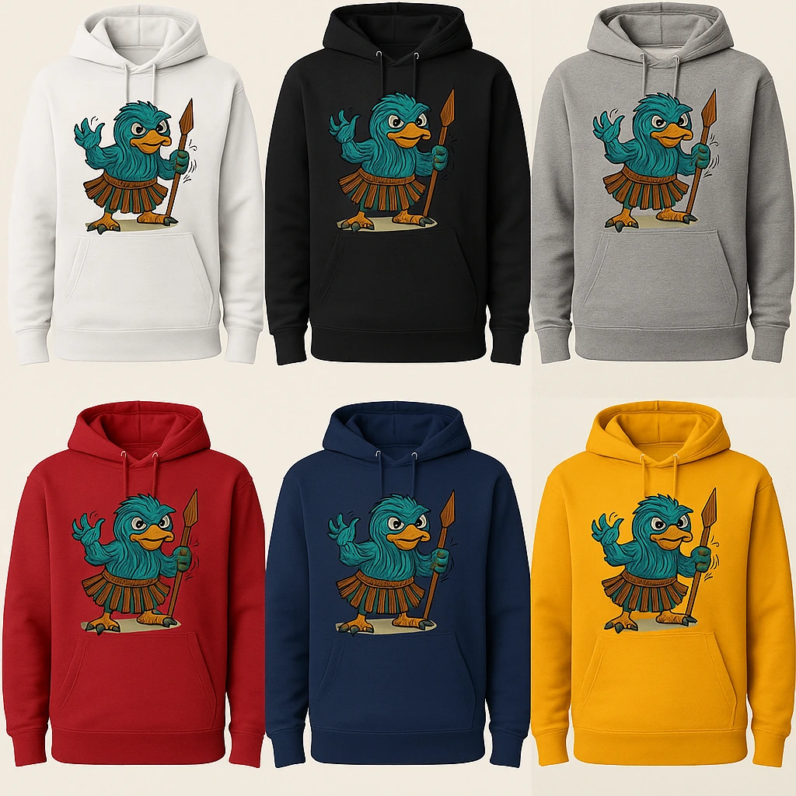

Tutu’s Aotearoa Map
Follow Tutu’s travels across Aotearoa. Each stop marks a story, a friend, or a creative adventure.
Tutu’s Weather Park

Discover the Weather Park — where the sun, rain, and snow play together in harmony.
Books
Dive into Tutu’s world — stories filled with aroha, adventure, and laughter.
Merchandise
Get official Tutu the Kiwi shirts, hoodies, and goodies made with love in Aotearoa.
About Tutu
Tutu the Kiwi was created by Hamaka Murray to share stories, art, and whānau-focused creativity from Aotearoa. The kaupapa is all about celebrating kindness, creativity, and connection.
Follow us on Instagram and Facebook for new stories, art, and adventures!